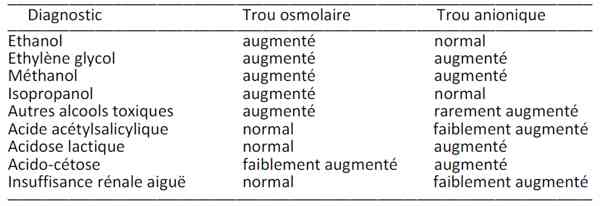
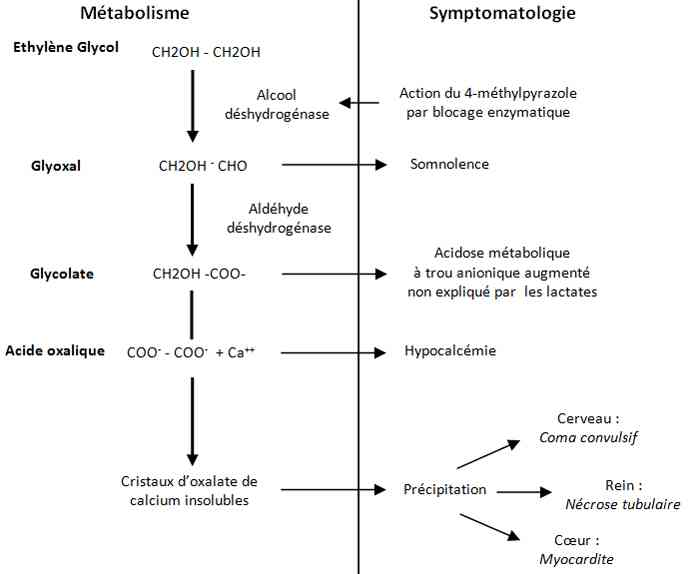
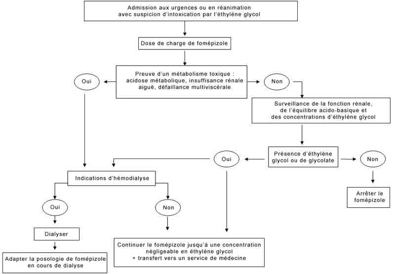

Bienvenue Sur Medical Education
Intoxication : éthylène glycol
Spécialité : pediatrie / toxicologie /
Points importants
-
Intoxication rare mais potentiellement grave (dose létale: 1 mL/kg, possible dès 30 mL chez l'adulte)
-
Intoxication accidentelle suite au déconditionnement d'un produit antigel (saveur douce)
-
Toxicité liée aux métabolites résultant de l'action de l'alcool déshydrogénase hépatique
-
Précipitation de cristaux d'oxalate de calcium dans les tubules rénaux ou le cerveau
-
Responsable d'une acidose métabolique à trou anionique augmenté
-
Antidote: inhibiteur (fomépizole) ou substrat (éthanol) compétitif de l'alcool déshydrogénase
-
Hémodialyse : indication à discuter avec une équipe spécialisée de réanimation
Présentation clinique / CIMU
SIGNES FONCTIONNELS
-
Initialement asymptomatique, ébriété modérée
-
Délai des signes : 12-24 h après ingestion
-
Signes respiratoires : dyspnée
-
Signes digestifs (modérés) : nausées, vomissements, douleurs abdominales ou lombaires
-
Douleurs musculaires (myosite)
-
Signes rénaux : oligurie ou anurie
-
Signes neurologiques : coma, convulsions
CONTEXTE
Présentation clinique / CIMU
SIGNES FONCTIONNELS
- Initialement asymptomatique, ébriété modérée
- Délai des signes : 12-24 h après ingestion
- Signes respiratoires : dyspnée
- Signes digestifs (modérés) : nausées, vomissements, douleurs abdominales ou lombaires
- Douleurs musculaires (myosite)
- Signes rénaux : oligurie ou anurie
- Signes neurologiques : coma, convulsions
CONTEXTE
Terrain
- Sujet dépressif (tentative de suicide)
Antécédents
- Dépression
Circonstances de survenue
- Intoxication accidentelle par erreur de déconditionnement du produit acheté (circonstance la plus fréquente)
- Intoxication par substitut de boisson (homicide, malveillance, jeu)
- Tentative de suicide par ingestion
EXAMEN CLINIQUE
Neurologique
- Somnolence, ébriété modérée
-
Troubles de la conscience allant jusqu'au coma
 dans les formes vues tardivement
dans les formes vues tardivement - Convulsions, myoclonies, crises de tétanie
Cardiovasculaire
- Tachycardie
- Hémodynamique généralement conservée sauf cas vus tardivement avec défaillance multiviscérale
Pulmonaire
- Dyspnée de Kussmaul (par acidose métabolique)
Rénal
- Urines foncées, oligurie voire anurie
Défaillance multiviscérale si intoxication massive vue tardivement
-
Les modes de découverte de l'intoxiqué sont donc multiples :
- absence de symptômes (le plus fréquemment)
- hyperventilation réflexe due à l'acidose métabolique
- troubles de la conscience
- atteinte rénale
- voire défaillance multiviscérale
EXAMENS PARACLINIQUES SIMPLES
- Bandelette urinaire : absence de corps cétoniques ; protéinurie et leucocyturie (atteinte tubulaire)
- Glycémie capillaire
CIMU
- Tri 1 à 3 en fonction de l'atteinte des fonctions vitales
Signes paracliniques
BIOLOGIQUE
-
Gaz du sang artériels : acidose métabolique à trou anionique augmenté
-
Ionogramme sanguin : bicarbonates abaissés ; trou anionique augmenté ; hyperkaliémie ; hyperglycémie
-
Créatininémie, urée sanguine : insuffisance rénale aiguë
-
Ionogramme urinaire : profil organique de l'insuffisance rénale aiguë (nécrose tubulaire) - mais possibilité d'une part fonctionnelle par déshydratation initiale sur la diurèse osmotique
-
Calcémie totale et ionisée : hypocalcémie
-
Lactates : normaux ou légèrement élevés sans expliquer le trou anionique - se méfier d'une possible hyperlactatémie retrouvée avec certains appareils de biologie délocalisée et liée à une interférence avec l'éthylène glycol : elle ne sera pas confirmé par le laboratoire de biochimie avec la technique de référence de dosage des lactates. Acidose métabolique avec trou anionique élevé (Na+ + K+) - (Cl- + HCO3-) > 16 mEq/L, non expliquée par une élévation des lactates. Le trou anionique est expliqué par les formates
-
L'absence de trou anionique ne doit jamais laisser sous-estimer la gravité potentielle d'une intoxication vue précocement
-
Mesure de l'osmolarité par la méthode du delta cryoscopique :
-
la différence entre l'osmolarité mesurée et l'osmolarité calculée est le témoin de la présence d'un toxique (ici l'éthylène glycol) de faible poids moléculaire et à forte concentration molaire
-
trou osmolaire : osmolarité mesurée - osmolarité calculée (= 1,86 [Na+] + [urémie] + [glycémie])/0,93, en mmol/L, N : 10-15 mosmol/kg)
-
un trou osmolaire de 16 mosmol/kg correspond à une concentration de méthanol à 1 g/L. Il est nul à la phase tardive alors même que l'acidose est la plus profonde
-
NFS : hyperleucocytose voire autres anomalies dont thrombopénie si cas vu tardivement avec défaillance multiviscérale
-
Bilan hépatique : anomalies si cas vu tardivement avec défaillance multiviscérale
-
Enzymes musculaires, enzymes cardiaques : présence d'une myosite ou myocardite toxique
-
Lipasémie : présence d'une pancréatite toxique
TOXICOLOGIQUE
-
Dosage plasmatique de l'éthylène glycol (seuil de toxicité: 0,2 g/L) : La concentration en éthylène glycol n'est pas corrélée à l'importance de l'atteinte rénale
-
Dosage des glycolates plasmatiques (si disponible) : C'est l'acide glycolique qui est responsable du trou anionique et de l'insuffisance rénale aiguë
-
Dosage plasmatique du méthanol : négatif
-
Dosage plasmatique des salicylés : négatif
-
Recherche de cristaux biréfringeants d'oxalate de calcium dans les urines : Ils sont visibles en microscopie optique, sous la forme d'enveloppes ou d'aiguilles et correspondent à des structures monohydratées (Whewellite) ou dihydratées (Weddelite). La cristallurie est en général massive et associée à une acidose métabolique avec des indosés anioniques augmentés, elle est en faveur de l'intoxication à l'éthylène glycol. Elle n'est cependant présente que dans 50% des intoxications
IMAGERIE
- la différence entre l'osmolarité mesurée et l'osmolarité calculée est le témoin de la présence d'un toxique (ici l'éthylène glycol) de faible poids moléculaire et à forte concentration molaire
- trou osmolaire : osmolarité mesurée - osmolarité calculée (= 1,86 [Na+] + [urémie] + [glycémie])/0,93, en mmol/L, N : 10-15 mosmol/kg)
- un trou osmolaire de 16 mosmol/kg correspond à une concentration de méthanol à 1 g/L. Il est nul à la phase tardive alors même que l'acidose est la plus profonde
Radiographie pulmonaire
- Normale malgré la polypnée
Echographie rénale
- Reins de taille normale, absence de dilatation pyélocalicielle, absence de dédifférenciation cortico-médullaire
TDM ou IRM cérébral
- A faire si signes neurologiques
- Œdème cérébral, hémorragie ou ischémie des noyaux gris
Echographie cardiaque
- Si état de choc
- Recherche d'une myocardite par précipitation de cristaux d'oxalate de calcium dans le myocarde à l'origine de la baisse de fraction d'éjection
FACTEURS PRONOSTIQUES
- Dose ingérée, délai de prise en charge > 10 h
- Acidose métabolique profonde (HCO3- < 10 mmol/L) avec trou anionique important
- Insuffisance rénale aiguë
- Présence de signes neurologiques
Diagnostic étiologique
-
Dosage plasmatique de l'éthylène glycol (seuil de toxicité > 0,2 g/L, critère de gravité si > 0,5 g/L)
Diagnostic différentiel
Diagnostic différentiel
- Autres causes d'acidose métabolique avec augmentation du trou osmolaire (> 25 mosmol/kg) et/ou du trou anionique (> 17 mEq/L)
 _684 Tableau Causes d'acidose métabolique avec augmentation du trou osmolaire et/ou du trou anionique
- Autres causes de polypnée ou d'insuffisance respiratoire aiguë
Traitement
TRAITEMENT PREHOSPITALIER/INTRAHOSPITALIER
Stabilisation initiale
- Voie veineuse de bon calibre
- Hydratation IV (NaCl 0,9% 1 000-2 000 mL/j) car possible déshydratation extracellulaire par diurèse osmotique
- Bicarbonates de sodium 1,4% (environ 1-2 mEq/kg) si acidose importante
- Remplissage vasculaire si collapsus
-
Intubation et ventilation mécanique si coma avec Glasgow < 8
- Clonazépam 1 mg IV si convulsion
Suivi du traitement
-
Décontamination digestive si vu dans l'heure, en l'absence de contre-indications :
- lavage gastrique
- charbon activé inefficace
- Alcalinisation si pH < 7,20 avec bicarbonates de sodium 1,4%
- 4-méthylpyrazole (Fomépizole®) : antidote de première ligne ; 15 mg/kg en 30 min (dose de charge) puis 10 mg/kg /12 h tant que la concentration en éthylène glycol > 0,2 g/L
- Ethanol (Curethyl®): alternative au fomépizole si non disponible; 0,6 g/kg (dose de charge) en 30 min sur cathéter central puis 0,1 g/kg/h en IV à la seringue électrique avec maintien d'une éthanolémie > 1 g/L tant que la concentration en éthylène glycol > 0,2 g/L
- Gluconate de calcium uniquement si hypocalcémie symptomatique sinon risque de majorer la précipitation d'oxalate de calcium dans les organes
- Hémodialyse à discuter si acidose profonde (pH artériel < 7,10 ou HCO3- < 5 mmol/L), insuffisance rénale. La concentration plasmatique en éthylène glycol n'est pas une indication si la fonction rénale est normale
MEDICAMENTS
Fomépizole
- Antidote de 1e ligne
- Inhibiteur compétitif de l'alcool déshydrogénase, dépourvu des effets secondaires de l'éthanol
- Il possède une très bonne affinité (plus élevée que l'éthanol) pour l'alcool déshydrogénase et entraîne un blocage efficace de cette enzyme, comme en témoigne l'allongement de la demi-vie d'élimination plasmatique de l'éthylène glycol (qui augmente jusqu'à environ 17 h)
- La dose de charge est de 15 mg/kg suivie d'une dose d'entretien de 10 mg/kg toutes les 12 h (ou avec une posologie décroissante)
- Le traitement est poursuivi jusqu'à ce que l'éthylène glycol devienne indétectable dans le plasma
- Les effets secondaires sont rares et peu graves : nausées, vertiges, céphalées, réactions allergiques, élévation des polynucléaires éosinophiles, douleur au site d'injection et élévation transitoire des transaminases
- Les contre-indications sont l'allergie connue aux pyrazolés et la grossesse (relative)
- En cas d'hémodialyse, la posologie d'entretien du fomépizole doit être augmentée à 1 mg/kg par heure pour compenser les pertes dans le dialysat
- En raison de la gravité potentielle, le fomépizole doit être administré le plus précocement possible, dès la suspicion d'intoxication (anamnèse compatible ou acidose métabolique à trou anionique augmenté) avant la confirmation toxicologique par le dosage plasmatique d'éthylène glycol. L'absence d'effets secondaires importants et la facilité de son administration chez les patients intoxiqués (voie orale possible et absence de monitorage des concentrations plasmatiques de fomépizole) en font un antidote idéal
Ethanol
- Antidote de 2e ligne, en l'absence ou si contre-indication du fomépizole
- L'oxydation de l'éthylène glycol peut être bloquée par l'éthanol qui est un substrat compétitif de l'alcool déshydrogénase
- Le schéma d'administration per os ou IV de l'éthanol est le suivant: 0,6 g/kg en dose de charge suivi d'une dose d'entretien de 50-150 mg/kg/h
- La posologie devra être adaptée aux mesures régulières de la concentration plasmatique d'éthanol qui doit se situer aux environs de 1 g/L afin de garantir un blocage efficace de l'alcool déshydrogénase
- La surveillance de ce traitement est de ce fait délicate en raison des effets secondaires neurologiques (ébriété et troubles de la conscience) et métaboliques (hypoglycémie) de l'éthanol et de la variabilité interindividuelle des posologies nécessaires (doses plus élevées chez les alcooliques chroniques)
Surveillance
CLINIQUE
-
Conscience (score de Glasgow), PA, FC, FR, diurèse/4 h
PARACLINIQUE
-
Ionogramme sanguin, créatininémie et mesure du trou anionique
-
Gazométrie : pH artériel et bicarbonates
-
Dosage plasmatique de l'éthylène glycol (cinétique)
Devenir / orientation
-
A adresser systématiquement aux urgences d'un hôpital pour évaluation de la toxicité (dosage plasmatique de l'éthylène glycol)
-
Ne pas se fier à l'examen clinique qui est initialement normal, même en présence d'une intoxication potentiellement fatale
CRITERES D'ADMISSION
score de Glasgow), PA, FC, FR, diurèse/4 hDevenir / orientation
- A adresser systématiquement aux urgences d'un hôpital pour évaluation de la toxicité (dosage plasmatique de l'éthylène glycol)
- Ne pas se fier à l'examen clinique qui est initialement normal, même en présence d'une intoxication potentiellement fatale
CRITERES D'ADMISSION
En réanimation
- Si acidose métabolique
- Si atteinte des fonctions vitales : insuffisance rénale aiguë, coma, convulsions, oedème cérébral, état de choc
- Si dose supposée ingérée ou concentration plasmatique en éthylène glycol élevée (> 0,5 g/L)
CRITERES DE SORTIE
- Disparition de tout trouble métabolique et de tout trouble de la conscience
- Amélioration de la fonction rénale (à distance de toute dialyse)
- Normalisation des gaz du sang
- Après avis psychiatrique en cas d'intoxication volontaire
Mécanisme / description
Généralités
-
L'éthylène glycol est un glycol utilisé comme :
- antigel (liquide de refroidissement pour automobiles, circuits de réfrigération, chauffage central)
- adjuvant de préparations exposés au gel (lave vitre, produits phytosanitaires)
- ou solvant industriel et intermédiaire de synthèse chimique (polyesters, éthers de glycols)
- Il s'agit d'un liquide visqueux incolore et de saveur sucrée
- Les intoxications aiguës sont liées le plus souvent à l'ingestion par accident (suite au déconditionnement de produits commerciaux dans des emballages alimentaires), à but suicidaire ou suite à une malveillance (utilisation comme substitut de boisson, en raison de son goût sucré)
- Comme toutes les nécroses tubulaires aiguës, la guérison est de règle en quelques semaines. Cependant, l'insuffisance rénale aiguë peut évoluer vers une insuffisance rénale chronique. Des séquelles neurologiques ont également été rapportées : anisocorie, ophtalmoplégie, paralysie faciale et autres atteintes de nerfs crâniens
Toxicocinétique
- Chez l'adulte, la dose létale ingérée est de l'ordre de 1 mL/kg
- Des intoxications mortelles ont été rapportées après la prise de 30 à 60 mL et inversement il a été décrit des ingestions massives de l'ordre de 3 000 mL précocement hospitalisées avec une évolution clinique favorable sous traitement
- L'absorption digestive est rapide (en 2h) et complète (biodisponibilité de 100%)
- L'éthylène glycol se distribue dans l'eau totale, avec un volume de distribution évalué à 0,7 L/kg
- Le métabolisme est hépatique à l'origine de métabolites expliquant la toxicité
- L'élimination de l'éthylène glycol et de ses métabolites est urinaire
- La clairance plasmatique est de l'ordre de 60 mL/min et la clairance rénale de l'ordre de 20 mL/min
- La cinétique d'élimination spontanée est d'ordre 0 (vitesse d'élimination indépendante de la concentration plasmatique) alors qu'en présence d'inhibiteurs, elle devient d'ordre 1 (vitesse fonction de la concentration d'éthylène glycol)
- La demi-vie d'élimination est allongée aux environs de 12 à 17 h en présence d'éthanol ou de fomépizole et s'abaisse si hémodialyse vers 2,5 à 3,5 h
Mécanisme de toxicité
- L'EG est métabolisé dans le foie par l'alcool déshydrogénase en glycolaldéhyde puis par l'aldéhyde déshydrogénase en acide glycolique
 _685 Tableau Mécanisme de toxicité de l'éthylène glycol
- D'autres métabolites peuvent également apparaître suite à différentes réactions d'oxydation : l'acide glyoxylique, l'acide oxalique, l'acide formique et la glycine
- L'acidose métabolique à trou anionique élevé est liée à la présence de ces acides carboxyliques bien qu'il puisse exister une légère augmentation des lactates secondaire à l'inhibition du cycle de Krebs (défaut de régénération du NAD)
- L'acide glycolique, produit en quantité importante alors même que son métabolisme est lent, est le principal responsable de l'acidose métabolique
- L'acide oxalique précipite dans les tubules rénaux en oxalate de calcium provoquant ainsi une insuffisance rénale en 2 à 3 jours et une hypocalcémie par déplétion. La précipitation cérébrale des cristaux d'oxalate de calcium est responsable du coma convulsif, alors que l'atteinte cardiologique est liée à la myosite due à ces cristaux. Néanmoins, les données expérimentales sont aussi en faveur d'une toxicité rénale de l'acide glyoxylique et du glycoaldéhyde
- Le traitement antidotique vise donc à inhiber le plus rapidement le métabolisme de l'éthylène glycol en ses dérives toxiques
Algorithme
-
Algorithme de prise en charge d'une intoxication à l'éthylène glycol
 _686 Algorithme Algorithme : intoxication à l'éthylène glycol
Bibliographie
-
Mégarbane B, Borron SW, Baud FJ. Current recommendations for treatment of severe toxic alcohol poisonings. Intensive Care Med 2005; 31:189-95
-
Borron SW, Mégarbane B, Baud FJ. Fomepizole in the treatment of uncomplicated ethylene glycol poisoning. Lancet 1999; 354: 831.. Brent J, McMartin K, Phillips S, et al. Fomepizole for the treatment of ethylene glycol poisoning. Methylpyrazole for Toxic Alcohols Study Group. N Engl J Med 1999; 340: 832-8
-
Barceloux DG, Krenzelok EP, Olson K, Watson W. American Academy of Clinical Toxicology Practice Guidelines on the Treatment of Ethylene Glycol Poisoning. Ad Hoc Committee. J Toxicol Clin Toxicol 1999; 37:537-60
-
Borron SW, Mégarbane B, Baud FJ. Fomepizole in the treatment of uncomplicated ethylene glycol poisoning. Lancet 1999; 354: 831
-
Brent J, McMartin K, Phillips S, et al. Fomepizole for the treatment of ethylene glycol poisoning. Methylpyrazole for Toxic Alcohols Study Group. N Engl J Med 1999; 340: 832-8
-
Brent J. Fomepizole for ethylene glycol and methanol poisoning. N Engl J Med 2009; 360: 2216-2223
Borron SW, Mégarbane B, Baud FJ. Fomepizole in the treatment of uncomplicated ethylene glycol poisoning. Lancet 1999; 354: 831
Brent J, McMartin K, Phillips S, et al. Fomepizole for the treatment of ethylene glycol poisoning. Methylpyrazole for Toxic Alcohols Study Group. N Engl J Med 1999; 340: 832-8
Brent J. Fomepizole for ethylene glycol and methanol poisoning. N Engl J Med 2009; 360: 2216-2223
Auteur(s) : Bruno MEGARBANE